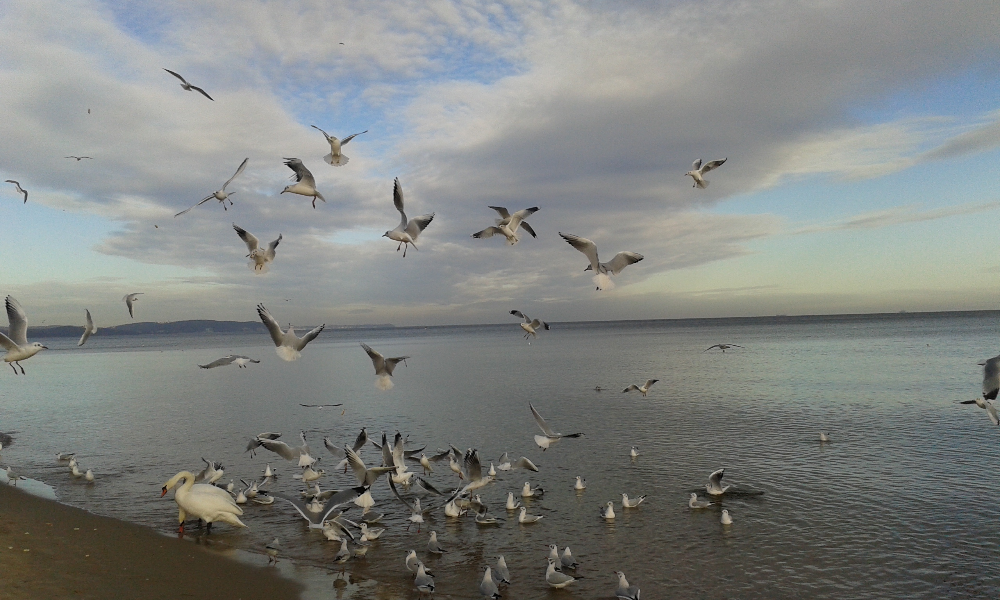
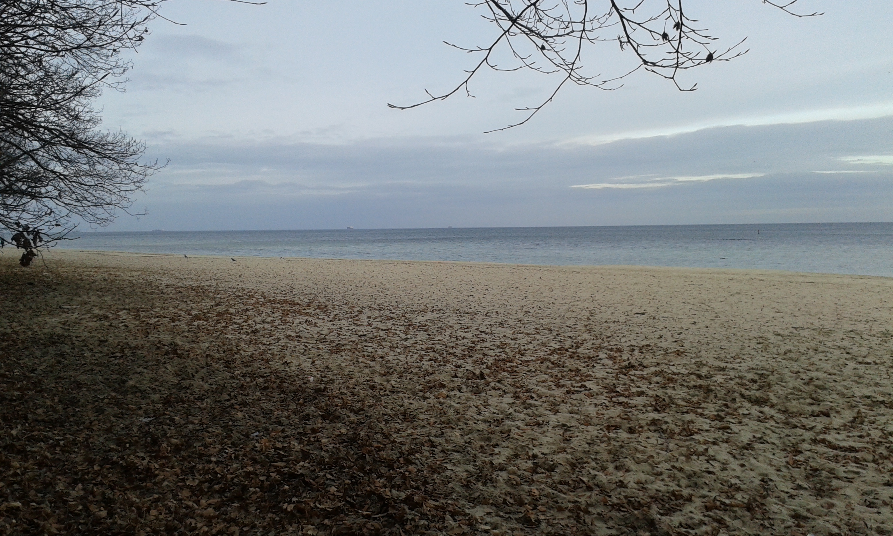
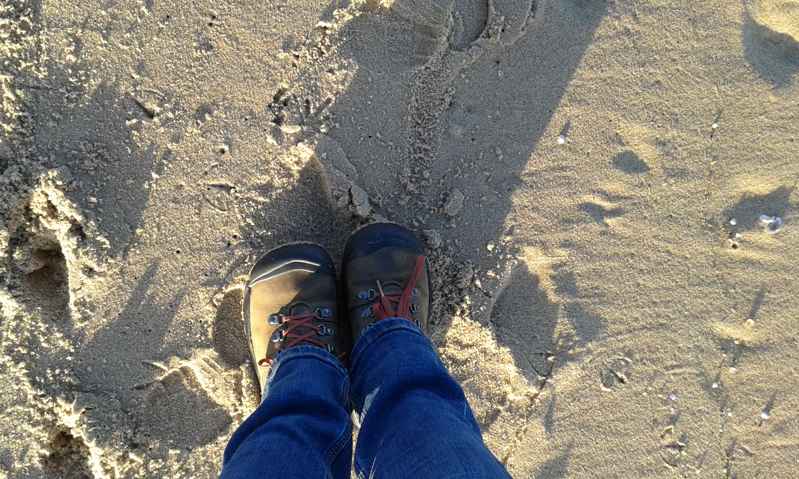

Cała ja
Nazywam się Sylwia Orłowska i od najmłodszych lat lubię podróżować.Od najmłodszych lat moi rodzice pchali mnie w świat, zgodnie
z filozofią, że tego, co zobaczę, przeżyję, doświadczę, nikt mi nie zabierze.

Na świat patrzę z przymróżonym okiem....

czasem też poważnie....

a czasami nie patrzę